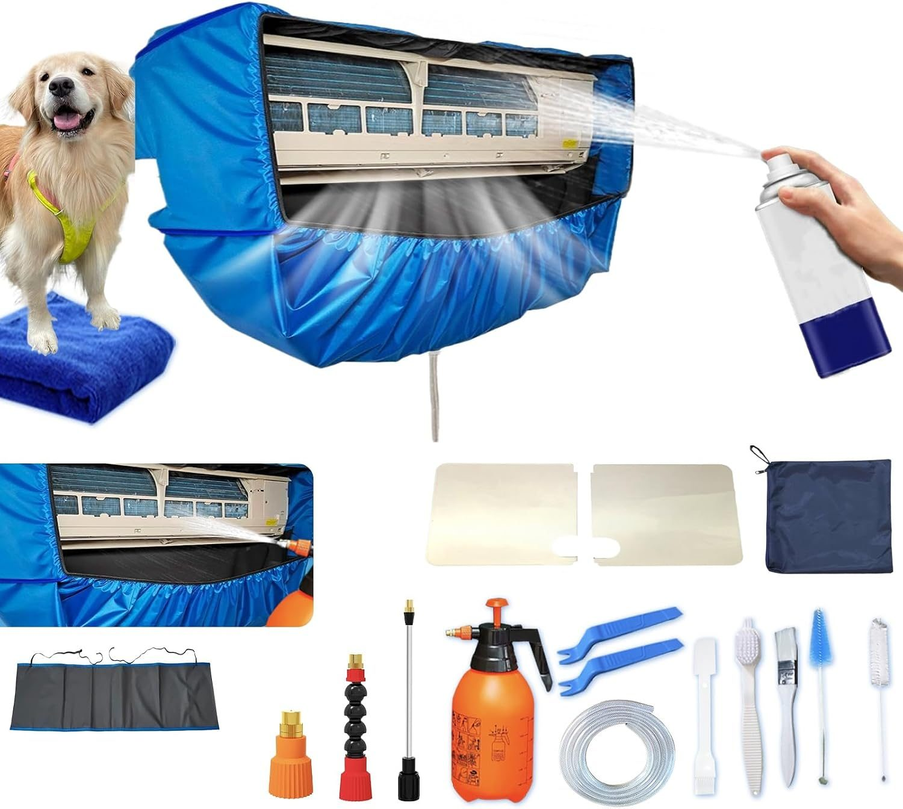

| Material | Cloruro de polivinilo (PVC) |
| Color | Azul Y Blanco, Trae Una Tetera |
| Marca | kikepilm |
| Peso del producto | 1,5 Kilogramos |
| Nivel de resistencia al agua | A prueba de agua |
| Tipo de cierre | Sin cierre. |
| Número de unidades | 1.0 Conteo |
| Número de paquetes | 1 |
| Nombre del conjunto | Juego con tetera |
| Número de productos | 18 |